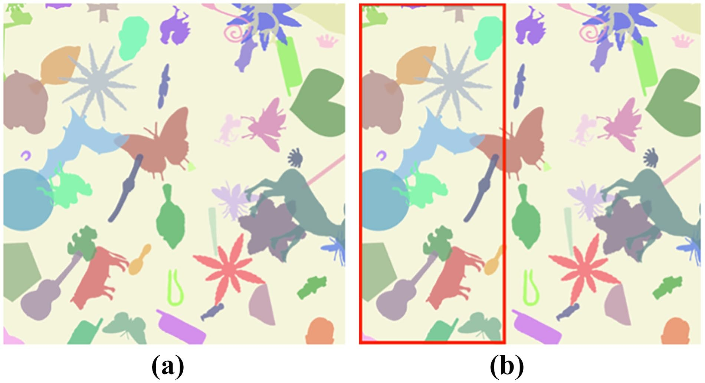
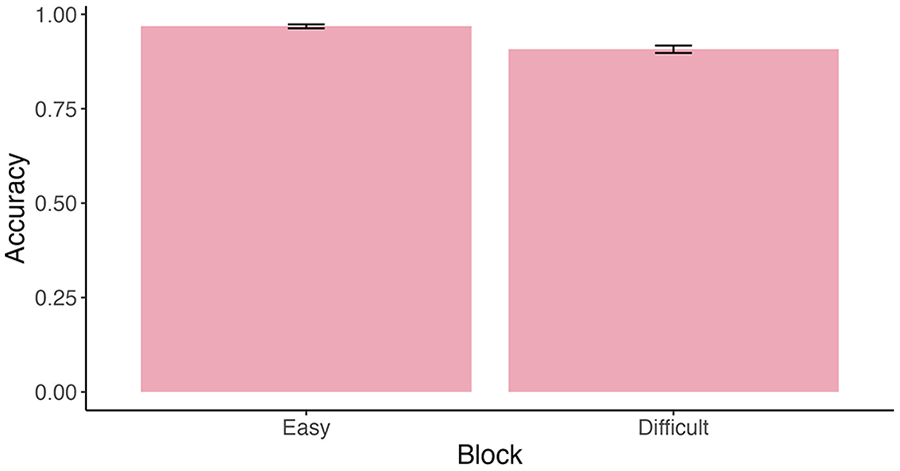
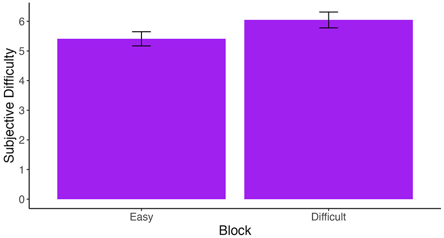
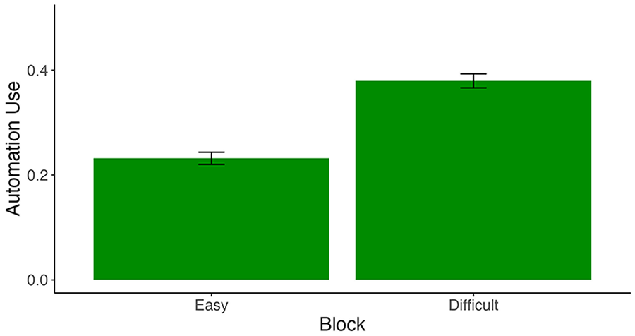
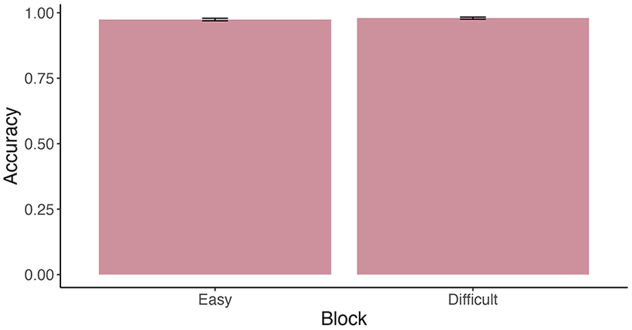
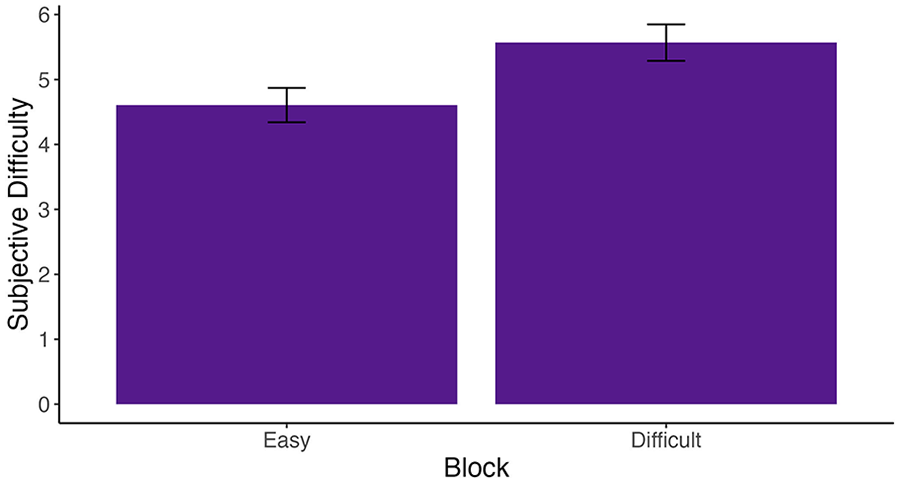

Perceptions of Difficulty in an Automation-Supported Task
CHAT Lab · Human Factors and Applied Cognition, NC State University
Do people turn on automation when a task feels harder, or when it actually is harder?
The why
People are increasingly the ones deciding when to use an automated system, whether that means opening GPS, asking ChatGPT, putting on night vision goggles, or setting a calendar reminder. Those decisions are often less than ideal: people skip automation when it would help, and the performance of the person and the system together suffers.
You might expect people to lean on automation more when a task is harder, and research on reliance often finds that they do. When the choice to turn the system on is theirs, though, the pattern doesn't always hold. In earlier work, automation use often barely changed even as accuracy dropped. One explanation is that how hard a task feels and how hard it actually is are not the same thing. People often misjudge their own performance, so they may also misjudge how much help a task calls for.
This study tested that idea. We tried to make a task feel harder without making it harder, expecting people to turn on an automated aid more often when they rated the task as more difficult, even if their accuracy hadn't changed.
What we did
Seventy-three undergraduate students (66 in the final analysis) searched cluttered images for a small bat and indicated whether it was there, with up to nine seconds per image. Images were classified as easy or difficult based on how many objects they contained and how much those objects overlapped. An automated aid was sometimes available: a red box outlining the third of the image that contained the bat, or the whole image when the bat was absent. The aid was 100% accurate, though participants were only told it was highly accurate, and they could turn it on or off on each trial.

Participants completed four blocks in this order: easy images without the aid, easy images with the aid available, difficult images without the aid, and difficult images with the aid available. After each block, they rated how difficult it had been on a scale from 0 to 10.
What we found
Without the aid, the difficult images were harder, and people noticed
On their own, participants were less accurate on the difficult images (91% versus 97%) and rated them as harder (6.0 versus 5.4 out of 10). Their response times were almost identical, though, at about 4 seconds for both. People didn't slow down to make up for the harder images.


People used the aid more on the difficult images
When the aid was available, participants turned it on for 38% of difficult trials compared with 23% of easy trials.

With the aid, performance evened out, but the difficult images still felt harder
With the aid available, accuracy was the same for easy and difficult images (97% and 98%). Participants used the aid just enough to bring their performance on the difficult images up to their level on the easy ones. Even so, they still rated the difficult images as harder (5.5 versus 4.6). How hard the task felt and how well people actually did had come apart.


Why it matters
Participants used the aid on fewer than 40% of trials on average, much less often than in other studies of discretionary automation, yet they used it well. They turned it on more when the task was harder and in a way that erased the gap between easy and difficult images, bringing the person-and-aid team close to ceiling. Even with a highly reliable aid, they didn't just leave it on for every trial, which suggests that under the right conditions people can make good decisions about when to use automation.
The results also show that perceived difficulty doesn't always track performance. If people decide when to use automation based on how hard a task feels, designers need to pay attention to that experience as well as to accuracy. This matters beyond the lab, too. A person with a disability may perform a task just as well as someone without one while putting in far more effort, and an employee can do excellent work while ending every day exhausted. Performance alone can hide how demanding something really is.
Because the harder images changed both how hard the task felt and how hard it was on the manual trials, this study couldn't fully separate the two. That question became our follow-up study on time pressure. Future work should also separate the effort of the task itself from the effort of operating the automation, and include people beyond university students.
My role
I was first author on this paper, which examined where perceived difficulty diverges from objective difficulty and how each relates to the choice to use automation. I ran the statistical analyses in R, wrote the paper, and presented the findings as a lecture at the 2025 HFES Annual Meeting in Chicago. This work led directly to my follow-up study on time pressure, published at HFES 2026.
Read the full paper
Padilla, J. G., & Patton, C. E. (2025). Perceptions of difficulty in an automation-supported task. Proceedings of the Human Factors and Ergonomics Society Annual Meeting, 69(1), 768–773.